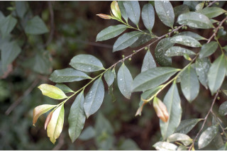
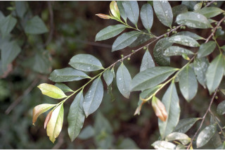

Small trees up to 5 m tall.
5 ಮೀ. ಎತ್ತರದವರೆಗಿನ ಸಣ್ಣ ಮರಗಳು.
Small trees up to 5 m tall.
சிறிய மரம் 5 மீ. உயரம் வரை வளரக்கூடியது.
Bark brown, smooth; blaze brown.
ತೊಗಟೆ ಕಂದು ಬಣ್ಣದಲ್ಲಿದ್ದು,ನಯವಾಗಿರುತ್ತದೆ;ಕಚ್ಚು ಮಾಡಿದ ಜಾಗ ಕಂದು ಬಣ್ಣದಲ್ಲಿರುತ್ತದೆ.
Bark brown, smooth; blaze brown.
மரத்தின் பட்டை ப்ரவுன், வழுவழுப்பானது; உள்பட்டை ப்ரவுன் நிறமானது.
Young branchlets angular with two lateral ridges, glabrous.
ಕಿರುಕೊಂಬೆಗಳು ಕೋನಯುಕ್ತವಾಗಿದ್ದು ಪಾರ್ಶ್ವದಲ್ಲಿರುವ ಎರಡು ಏಣುಗಳ ಸಮೇತವಿರುತ್ತವೆ, ರೋಮರಹಿತವಾಗಿರುತ್ತವೆ.
Young branchlets angular with two lateral ridges, glabrous.
சிறிய நுனிக்கிளைகள் குறுக்குவெட்டுத் தோற்றத்தில் கோணங்களுடையது மற்றும் பக்கவாட்டில் 2 மேடுகளுடன் அமைந்தவை, உரோமங்களற்றது.
Leaves simple, alternate, distichous; petiole 0.3-1 cm long, canaliculate, glabrous; lamina 2.5-10 x 1.5-4 cm, elliptic to elliptic-oblanceolate, apex acuminate with retuse tip, base acute to cuneate, margin serrulate, glabrous, coriaceous, dark green and shining above, pale beneath; midrib slightly canaliculate above; secondary_nerves up to 8 pairs, impressed above; tertiary_nerves broadly reticulate.
ಎಲೆಗಳು ಸರಳವಾಗಿದ್ದು ಪರ್ಯಾಯ ಜೋಡನಾ ವ್ಯವಸ್ಥೆಯಲ್ಲಿದ್ದು ಕಾಂಡದ ಎರಡೂ ಕಡೆ ಎದುರು ಬದರಿನ ಲಂಬ ಸಾಲಿನಲ್ಲಿರುತ್ತವೆ; ತೊಟ್ಟುಗಳು 0.3 – 1 ಸೆಂ.ಮೀ.ವರೆಗಿನ ಉದ್ದವಿದ್ದು,ಕಾಲುವೆಗೆರೆ ಸಮೇತವಿರುತ್ತವೆ ಮತ್ತು ರೋಮರಹಿವಾಗಿರುತ್ತವೆ; ಪತ್ರಗಳು 2.5 – 10 X 1.5–4 ಸೆಂ.ಮೀ. ಗಾತ್ರ,ಅಂಡವೃತ್ತದಿಂದ ಅಂಡವೃತ್ತ – ಬುಗುರಿಭರ್ಜಿ ಯವರೆಗಿನ ಆಕಾರ ಹೊಂದಿದ್ದು, ಅಗಲವಾದ ಹಾಗೂ ದುಂಡನೆಯ ತುದಿ ಮತ್ತು ತಗ್ಗುಳ್ಳ ಅಗ್ರ ಹೊಂದಿದ ಕ್ರಮೇಣ ಚೂಪಾಗುವ ತುದಿ,ಚೂಪಾದ ಮಾದರಿಯಿಂದ ಬೆಣೆಯಾಕಾರ ದವರೆಗಿನ ಬುಡ, ಸೂಕ್ಷ್ಮ ಗರಗಸ ದಂತಿತವಾದ ಅಂಚು ಹೊಂದಿದ್ದು ರೋಮರಹಿತ ವಾಗಿರುತ್ತವೆ, ಪತ್ರಗಳ ಮೇಲ್ಮೈ ತೊಗಲನ್ನೋಲುವ ಮಾದರಿಯಲ್ಲಿದ್ದು,ಕಡುಹಸಿರು ಬಣ್ಣ ಮತ್ತು ಹೊಳಪನ್ನುಳ್ಳ ಮೇಲ್ಭಾಗ,ಮಾಸಲು ಬಣ್ಣದ ತಳಭಾಗವನ್ನು ಹೊಂದಿರುತ್ತವೆ;ಮಧ್ಯನಾಳ ಪತ್ರದ ಮೇಲ್ಭಾಗದಲ್ಲಿ ಸ್ವಲ್ಪಮಟ್ಟಿನ ಕಾಲುವೆಗೆರೆ ಸಮೇತವಿರುತ್ತದೆ;ಎರಡನೇ ದರ್ಜೆಯ ನಾಳಗಳು 8 ಜೋಡಿಗಳವರೆಗೆ ಇದ್ದು, ಮೇಲ್ಭಾಗದಲ್ಲಿ ಅಚ್ಚೊತ್ತಿದಂತಿರುತ್ತವೆ;ಮೂರನೇ ದರ್ಜೆಯ ನಾಳಗಳು ವಿಶಾಲ ಜಾಲಬಂಧ ನಾಳ ವಿನ್ಯಾಸದಲ್ಲಿರುತ್ತವೆ.
Leaves simple, alternate, distichous; petiole 0.3-1 cm long, canaliculate, glabrous; lamina 2.5-10 x 1.5-4 cm, elliptic to elliptic-oblanceolate, apex acuminate with retuse tip, base acute to cuneate, margin serrulate, glabrous, coriaceous, dark green and shining above, pale beneath; midrib slightly canaliculate above; secondary_nerves up to 8 pairs, impressed above; tertiary_nerves broadly reticulate.
இலைகள் தனித்தவை, மாற்றுஅடுக்கமானவை, இருநெடுக்கு வரிசையிலையடுக்கம் (டைஸ்டிக்கஸ்); இலைக்காம்பு 0.3-1 செ.மீ. நீளமானது, குறுக்குவெட்டுத் தோற்றத்தில் கேனாலிகுலேட், உரோமங்களற்றது; இலை அலகு 2.5-10 X 1.5-4 செ.மீ., நீள்வட்ட வடிவானது முதல் நீள்வட்டம் அல்லது தலைகீழ் ஈட்டி வடிவானது, அலகின் நுனி அதிக்கூரியதுடன் அதன் முனையில் சிறு பிளவுடையது (ரெட்யூஸ்), அலகின் தளம் கூரியது முதல் ஆப்பு வடிவானது, அலகின் விளிம்பு சிறிய ரம்ப பற்களுடையது, உரோமங்களற்றது, கோரியேசியஸ், கரும்பச்சை நிறமானது மற்றும் அலகின் மேற்பரப்பு பளபளப்பானது, அலகின் கீழ்பரப்பு வெளிறியது; மையநரம்பு மேற்புறத்தில் அலகின் பரப்பைவிட சிறிது பள்ளமானது; இரண்டாம் நிலை நரம்புகள் 8 ஜோடிகள், அலகின் மேற்புறத்தில் பள்ளமானது; மூன்றாம் நிலை நரம்புகள் அகன்ற வலைப்பின்னல் போன்றவை.
Flowers unisexual, greenish-white, in axillary fascicles, subsessile.
ಹೂಗಳು ಏಕಲಿಂಗಿಗಳು, ಹಸಿರು ಮಿಶ್ರಿತ ಬಿಳಿ ಬಣ್ಣದಲ್ಲಿದ್ದು, ಅಕ್ಷಾಕಂಕುಳಿನಲ್ಲಿನ ಗುಚ್ಛಗಳಲ್ಲಿರುತ್ತವೆ,ಉಪತೊಟ್ಟುಗಳನ್ನು ಹೊಂದಿರುತ್ತವೆ.
Flowers unisexual, greenish-white, in axillary fascicles, subsessile.
மலர்கள் ஓர் பாலானவை, பச்சை-வெள்ளை நிறமானது, இலைக்கோணங்களில் தொகுப்பாகமைந்தவை, காம்பற்றது அல்லது மிகச்சிறிய காம்புடையது.
Berry, globose, purplish black when ripe; seeds many.
ಬೆರ್ರಿಗಳು ಗೋಳಾಕಾರದಲ್ಲಿದ್ದು,ಕಳಿತಾಗ ಕೆನ್ನೀಲಿ ಮಿಶ್ರಿತ ಕಪ್ಪು ಬಣ್ಣದಲ್ಲಿರುತ್ತವೆ;ಬೀಜಗಳ ಸಂಖ್ಯೆ ಹಲವಾರು.
Berry, globose, purplish black when ripe; seeds many.
முழுச்சதைகனி (பெர்ரி), கோள வடிவமானது, கனியும் போது பர்புள்-கருப்பு நிறமானது; விதைகள் எண்ணற்றது.

 
